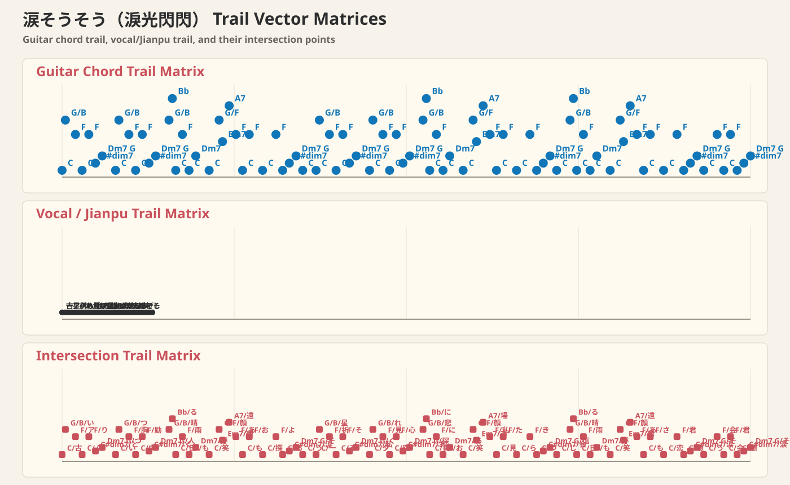

涙そうそう（淚光閃閃）
夏川りみ 詞：森山良子 曲：BEGIN
- Key
- F
- Capo
- -
- Beat
- 4/4
前奏
| CG/B| FC| FC| Dm7G || C-BbC| FC/E| Dm7G| C | C |
A
古いアルバムめくり ありがとうってつぶやいた
Furui arubamu mekuri arigatou tte tsubuyaita
いつもいつも胸の中 励ましてくれる人よ
Itsumo itsumo mune no naka hagemashite kureru hito yo
晴れ渡る日も 雨の日も 浮かぶあの笑顔
Harewataru hi mo ame no hi mo ukabu ano egao
想い出遠くあせても おもかげ探して
Omoide tooku asete mo omokage sagashite
よみがえる日は 涙そうそう
Yomigaeru hi wa nada sousou
B
一番星に祈る それが私のくせになり
Ichiban boshi ni inoru sore ga watashi no kuse ni nari
夕暮れに見上げる空 心いっぱいあなた探す
Yuugure ni miageru sora kokoro ippai anata sagasu
悲しみにも喜びにも おもうあの笑顔
Kanashimi ni mo yorokobi ni mo omou ano egao
あなたの場所から 私が見えたら
Anata no basho kara watashi ga mietara
きっといつか 会えると信じ
Kitto itsuka aeru to shinjite
間奏
| Dm7| Dm7/G || CG/B| FC| F-CC#dim7| Dm7G || C-BbC| FC/E| Dm7G| C |
C
晴れ渡る日も 雨の日も 浮かぶあの笑顔
Harewataru hi mo ame no hi mo ukabu ano egao
想い出遠くあせても さみしくて恋しくて
Omoide tooku asete mo samishikute koishikute
君への想い 涙そうそう
Kimi e no omoi nada sousou
会いたくて会いたくて 君への想い 涙そうそう
Aitakute aitakute kimi e no omoi nada sousou
尾奏
| CG/B| FC| F-CC#dim7| Dm7| G| C |
